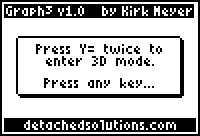
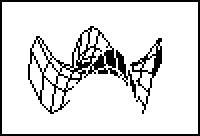
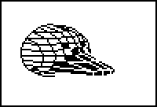

Graph3 v1.0
by Kirk Meyer
Graph3 is a 3D grapher for your TI-83+ or TI-83+ Silver Edition. It is faster than the TI-89’s built-in grapher. It features rotation, zooming, tracing, and more. It also draws either wireframe or hidden surface plots.
  
Send the "graph3.8xk" file to your calculator using a graph link. You must have a link; applications cannot be typed in by hand.
To install, press [APPS] and then select "Graph3" from the list. A message box will popup, instructing you on how to proceed. (If you have other graphing applications installed, for example, Inequality or Transformation graphing, you will be asked to uninstall them.)
| IMPORTANT: | If you have a previous version installed, upon running the new "Graph3" you will be asked to uninstall the old version. Run the old version to uninstall it, then delete it from your calculator. Also delete the corresponding APPVAR. This solves connectivity issues with the USB cable and newer versions of TI Connect. |
To enter 3D mode, press [Y=] twice. You will remain in 3D mode until you push a key that exits graph mode (examples: [2nd]QUIT, program editor, memory check, etc). Graphing is very similar to the normal function graphing on the 83+, with the following differences:
There are also the following additional features:
To uninstall, simply run the application again (from the [APPS] menu). It should display a message indicating that it has been installed.
| IMPORTANT: | Some applications will offer to uninstall Graph3. This will probably work, but it would be better to uninstall it yourself. |
| v1.1 | The application's name has been changed to "Graph3" to fix compatibility problems with the TI-84. Source code is also included with this version. |
| v1.0 | Many bugs fixed, including compatibility problems with OS version 1.13. Tracing problem also fixed. Added a few minor features and another easter egg (yes, there are two now). |
| v0.9 | Initial release. |
Graph3 is not compatible with programs such as Inequality Graphing or Transformation Graphing. If you have these applications installed, Graph3 will request that you uninstall them in order to proceed. Graph3 may be installed at the same time as Symbolic and Omnicalc. However, for compatibilty reasons, it does not allow you to enter their tokens into the Z= equation.
Thanks go out to...
Other people who have made suggestions and reported bugs so far:
This program is being provided to you for your use, free of charge. You may distribute it freely, but it may not be resold without prior written permission of the author. The program has been tested extensively. Nevertheless, it may still contain bugs which may adversely affect the performance of your calculator. In such a case, you agree that you will not hold me responsible for any such damages.